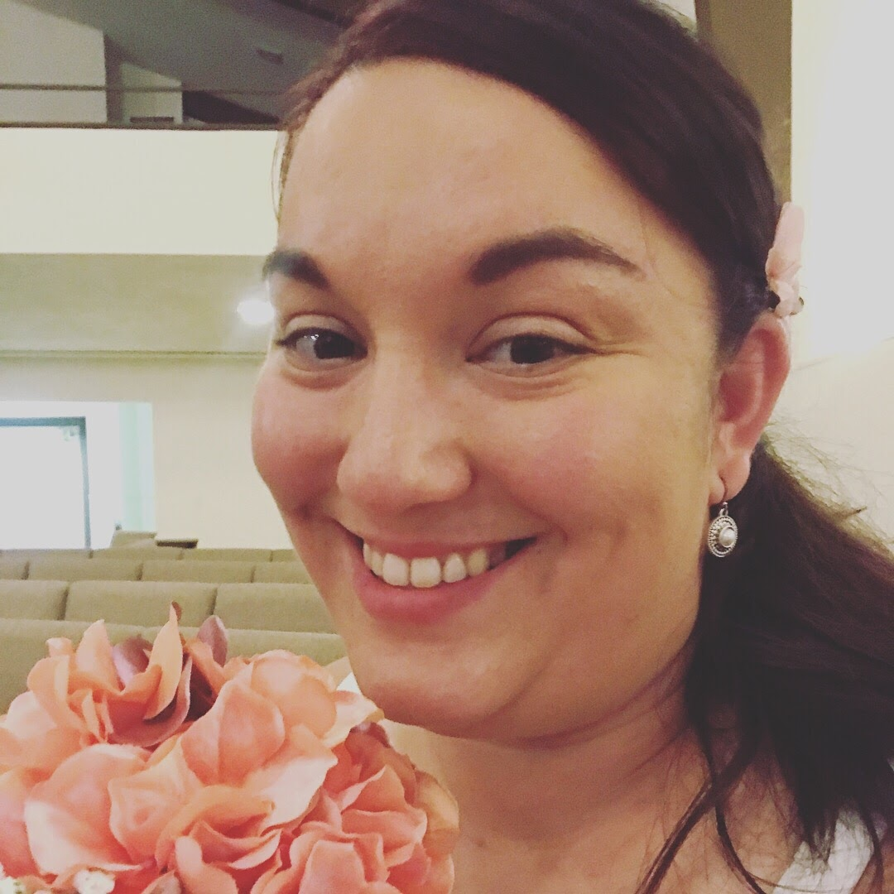
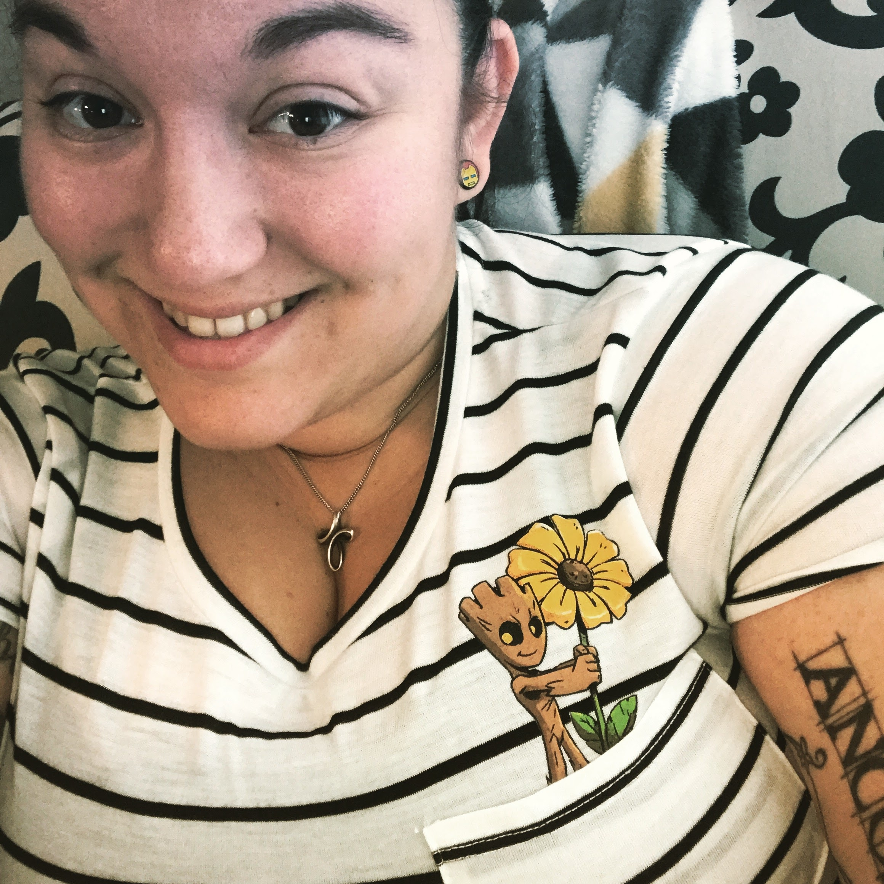

Home
Portfolio
About Me
This is my About Me Page

My name is Jillian Ozuna, I am 25 years young and I was born in San Antonio, Texas.
I am a proud graduate from the University of Texas at San Antonio with a Bachelors of Science in Mathematics.
This will be my 3rd year teaching at STEM Early College High School. I am currently the Class of 2020 class sponsor, I coach both a SA Best and FRC robtics teams and Sponsor a DIY Club.
In my three years of teaching I have experience teaching Geometry, College Readiness, 9th grade AVID and Advanced Quantitative Reasoning. This current academic year I will be teaching two Senior level PLTW courses, Civil Engineering and Architecture in the Fall and Computer Science Principles in the Spring.
